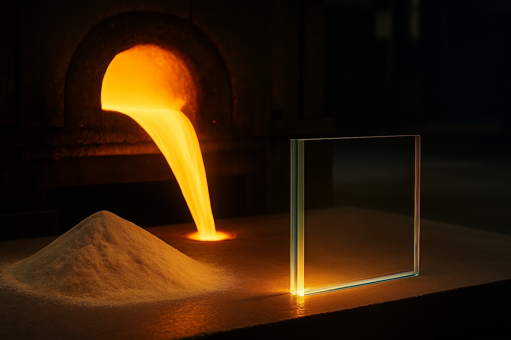

Simple vitrage
Verre feuilleté
Verre trempé
Double vitrage
Vitrage polycarbonate
Les types de vitrages
Le simple vitrage
Explication :
Le simple vitrage est obtenu en chauffant un mélange de sable, de calcaire et de soude à environ 1500 °C jusqu’à fusion. Il forme une plaque de verre rigide, utilisée seule mais peu efficace pour l’isolation thermique.
Épaisseur : 4 mm — épaisseur standard pour les anciens vitrages de fenêtres
Historique :
Longtemps seul type de vitrage utilisé, le simple vitrage équipe les habitations depuis le XIXe siècle. Peu à peu délaissé à partir des années 1970, il reste encore présent dans certains bâtiments anciens ou non chauffés.
